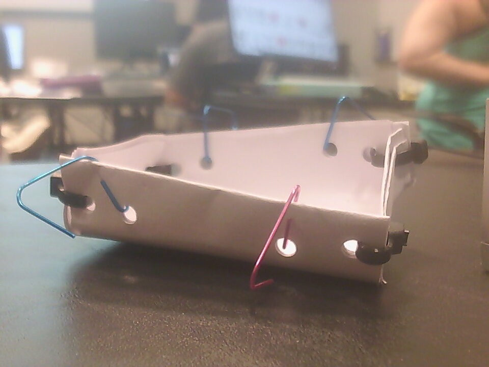

I made this prototype by raising a flat surface and connecting the corners together.
It stays together by a binding in the corner.
It is made out of paper, zip ties, and paper clips.
I was challenged in finding an idea and time. I succeeded in making a working prototype and finishing on time.
I would spend more time polishing the overall design.